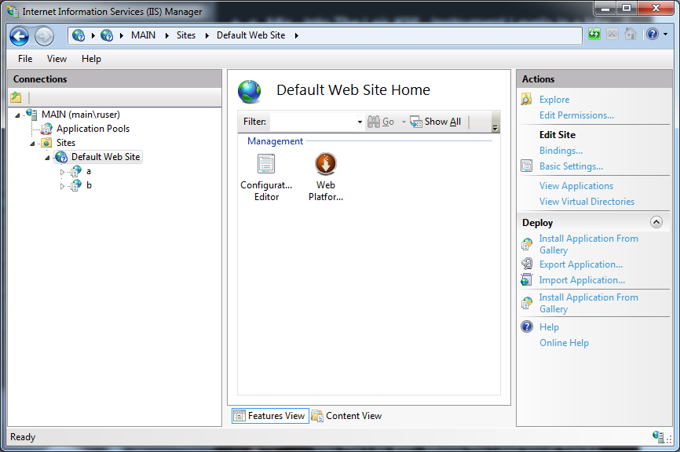
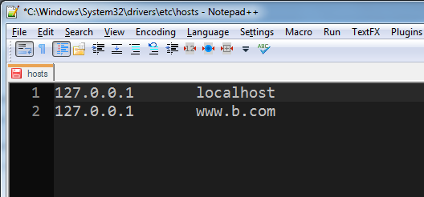
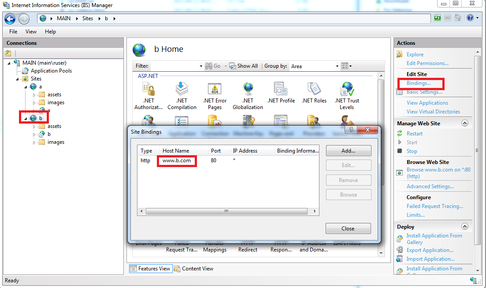
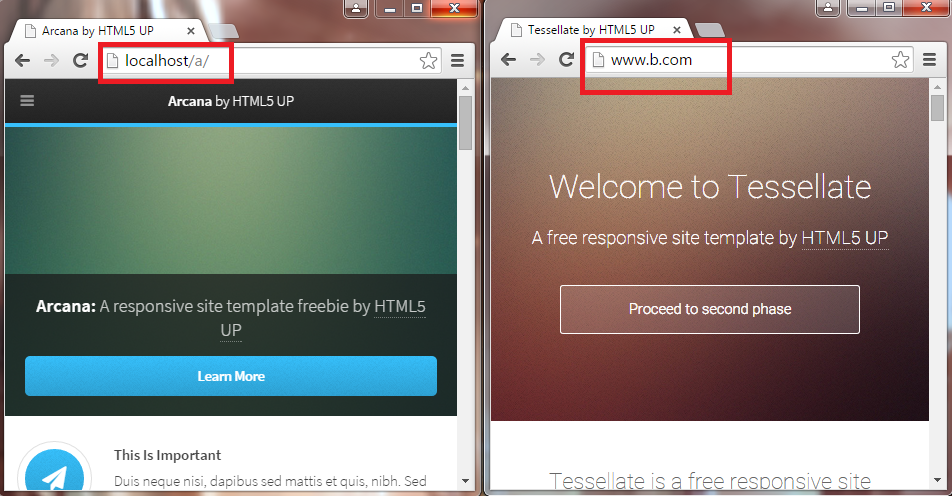
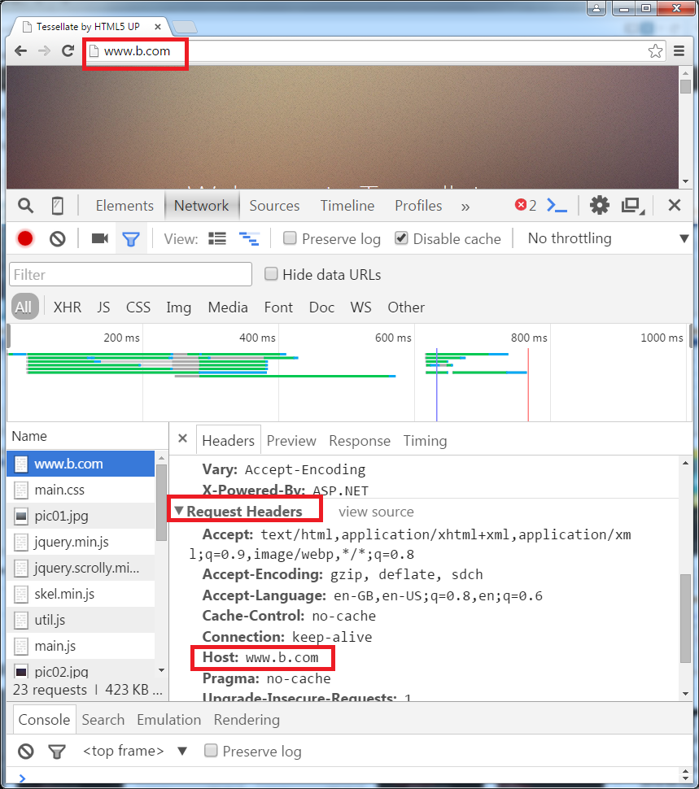

My team had just finished a .NET web service and AngularJS web app that used it and we wanted to deploy to IIS.
When newly installed, IIS has one default website that listens for calls on the standard HTTP port, 80. According to Microsoft, each website you create needs at least one application. So one option is to add your service and app to the default site. However, each app you add must have an alias. This alias is appended the URL of the default site.
However, each app you add must have an alias. This alias is appended the URL of the default site. For instance, below I've added two apps to the default site, with aliases a and b. 
You can browse to the b app by browsing to http://localhost/b.
But what if your client doesn't want to type /b to view the website? For instance, they might have configured www.b.com on their intranet to point to server 192.168.0.1.
But in the setup above they would have to browse to www.b.com/b. Very annoying.
Secondly, it's better to have each app in it's own site to allow greater control, being able to restart each site individually, and avoiding web.config clashes.
(To redirect a URL to a specific server, alter your hosts file, like this: 
So rather delete the default web site and create a site for a and a site for b, both on port 80, with apps for each inside each site, like this: 
In this example, if you browse to http://localhost/a you'll hit web app a, and if you browse to http://www.b.com you'll hit web app b. 
The important trick here is when creating web site b you need to set the host name, otherwise IIS will tell you it can't handle two sites both trying to listen on port 80. This setting is checked by IIS when receiving a web request and is part of the HTTP request header. 
If the technique above doesn't satisfy what you need to do in your configuration, maybe rewriting can help you.